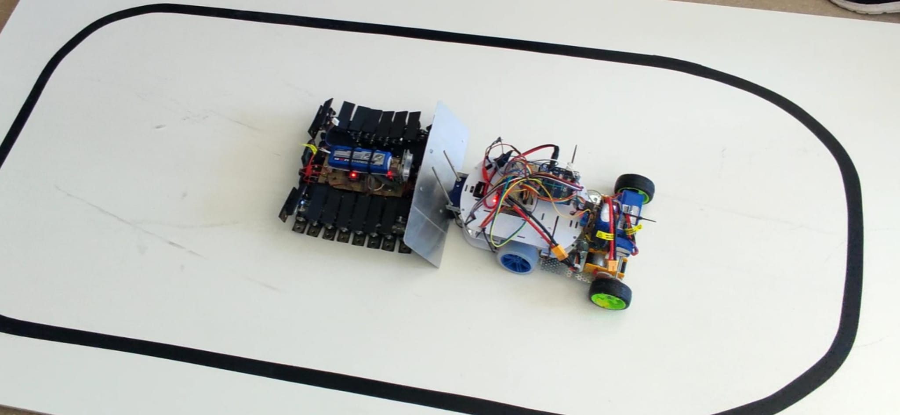

Autonomous Sumo Robot — Competition Finalist
An autonomous sumo wrestling robot with intelligent navigation, sensor fusion, and a custom deception strategy that reached the finals at the University of Granada robotics competition.
Project Details / Background
Conceptualized, designed, and built an autonomous sumo wrestling robot powered by four electric motors, showcasing expertise in robotics, embedded systems, and real-time decision-making. The robot was engineered to compete in university-level sumo wrestling tournaments where autonomous robots must push opponents out of a ring.
Integrated a comprehensive sensor array including three ultrasonic sensors for dynamic opponent detection and tracking, along with an infrared sensor to accurately detect and respond to boundary limits, preventing the robot from leaving the designated arena. The sensor data was processed in real-time to enable responsive and adaptive behavior.
Engineered a custom competitive strategy using a black-taped plate to simulate boundary conditions, effectively manipulating opponent behavior by tricking their IR sensors into believing they were at the edge. This innovative approach successfully led the team to the competition finals at the University of Granada.
Implemented the control system using two Arduino boards and two H-bridge motor driver boards for precise motor coordination, demonstrating efficient resource allocation, sensor integration, and low-level hardware programming. The dual-board architecture balanced computational load for rapid response times under constrained hardware conditions.
Image Gallery

Autonomous Sumo Robot — Competition-ready configuration